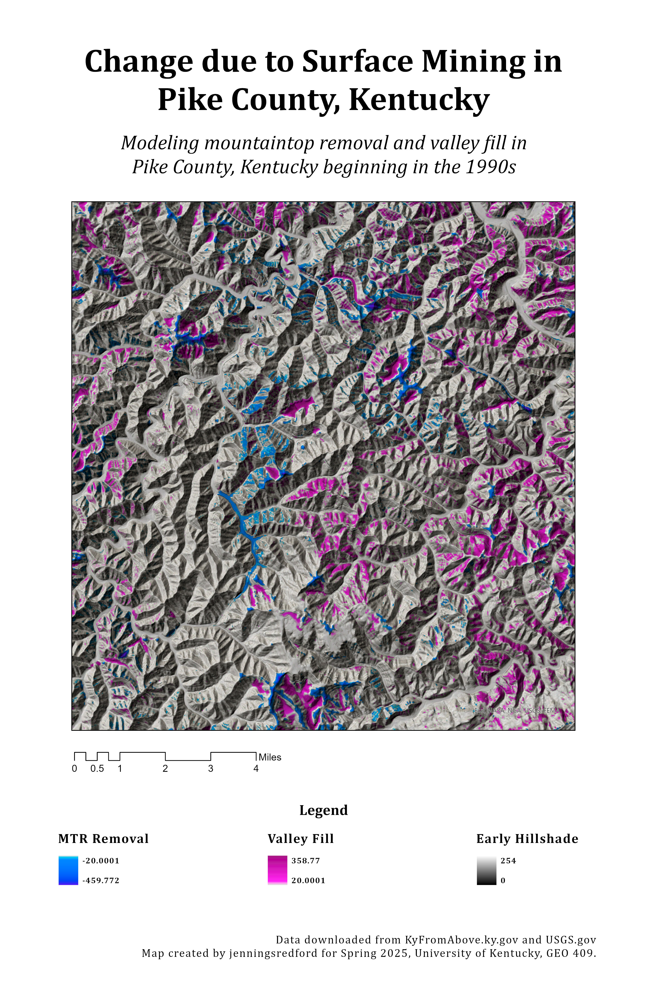
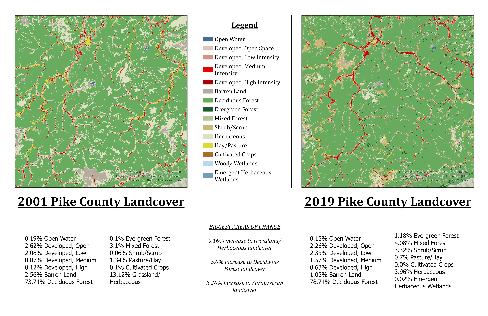

Exploring the Effects of Surface Mining in Pike County, Kentucky
Pike County, Kentucky is most widely known for their coal production, and mining operations have been steady in the area since the 1850s. Although mining in Pike County is and has not been strictly limited to coal, one cannot mention eastern Kentucky without mention of coal following shortly after. When you think of coal mining, you typically think underground operations... but coal mining can and does alter the surface as well. The maps to the right give deeper insight into how coal mining actually works and what happens to the land after operations have ceased.
The ultimate goal of this project is to explore the history of mining in Kentucky and to visualize surface changes due to mining over an extended amount of time.
This map shows the counties in which coal fields are located in the state of Kentucky. Interestingly enough, the Western and Eastern coal fields are quite different due to the consistently separate topography between the two areas. The western coal field presents a flat / gently rolling topography, which makes it ideal for large-area surface mines, large slope mines, and shaft mines. In WKY there are typically a fewer amount of large coal mine operations than its counterpart. The eastern Kentucky coal field, on the other hand, typically supports more mining operations that are smaller in size due to the mountainous topography. This hilly topography is ideal for contour surface mines, multiseam area mines, and drift underground mines. For our purposes, any type of surface operations will be much easier to visualize than underground. For this reason, we will be taking a closer look at surface changes in the Eastern Kentucky Coal Field.
This map models visual surfaces changes due to mining operations in Pike County beginning in the 1990s. Looking at this map, we can clearly see the different areas of cut and fill and how the earth's surface has been altered. But what happens to this land after operations have ceased?
Long before mining operations have ceased at a Site, they must have a Site-specific Mining Reclamation Plan. Mine reclamation is exactly what it sounds like--reclaiming the land after it can no longer be mined. This process is only one of many critical environmental aspects that go hand-in-hand with mining operations. Part of this process includes re-vegetating a certain percentage of the land. The shaded relief with NDVI map to the right helps visualize what happens to mining land post-reclamation by modeling vegetation changes in Pike County.
Visualizations created from lidar data provided by KyFromAbove in ArcGIS Pro and Blender. Additional sources of information from name of source, April, 2023.
Page and visualizations created by jenningsredford for GEO 409, Department of Geography, University of Kentucky. Spring 2025.
Kentucky Coal by County
Visualizing Surface Change in Pike County due to mountaintop removal and valley fill since the 1990s
Modeling Landcover Change in Pike County from 2001 to 2019